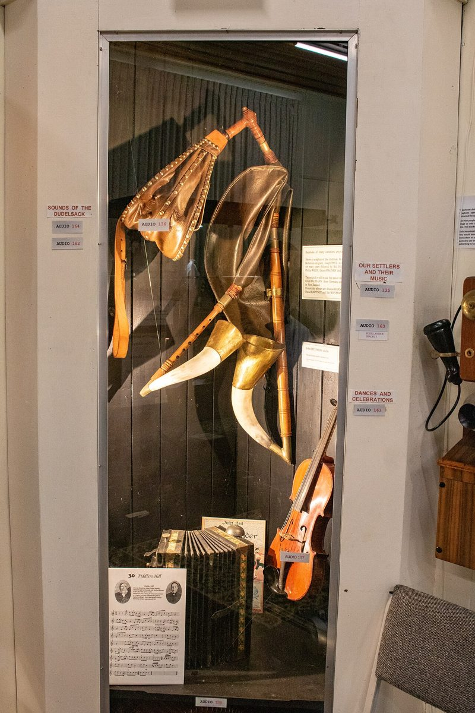

The song a poll said nobody wants
- who
- Komar & Melamid, Dave Soldier; lyrics Nina Mankin
- what
- “The Most Unwanted Song”, Dia Center
- when
- 1997
- where
- New York, USA

The artists Komar and Melamid and the composer Dave Soldier asked about 500 visitors to the Dia Center's website what they least wanted to hear in music. The answers included bagpipes, accordion, cowboy music, opera, rap, tuba, drum machines, advertising jingles and children's voices.
Then they put all of it into one 22-minute piece, with a children's choir urging you to shop at Walmart. It is a song engineered to be unbearable, and it is a lot of fun.